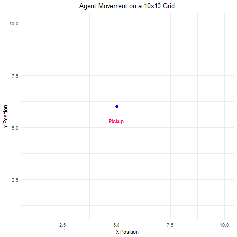
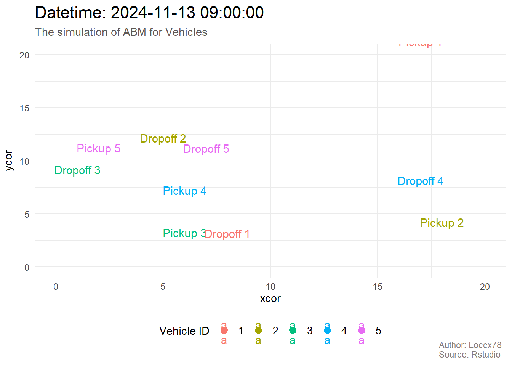

TIếp theo là chúng ta sẽ lập thử DES trong R để giả lập quá trình duy chuyển của xe trong chuỗi cung ứng để ứng tính ETD và ETA.
Trong R có package simmer thuần về xây dựng mô hình DES, đòi hỏi 3 nhân tố là: (i) Hành vi hoạt động của đối tượng, (ii) Hàm tính thời gian cho hoạt động và (iii) Môi trường để chạy mô phỏng. Bạn có thể đọc bài viết này để biết thêm simmerR.
1.2 Mô hình DES:
Các object cần có trong mô hình DES là:
Entitiy: là đối tượng chính cần quan sát, ví dụ: khách hàng. Bạn sử dụng hàm add_generator() để thêm đối tượng vào mô hình.
Attribute: là property của entity (có thể hiểu là đặc tính, trạng thái,…).
Resource: là một nguồn lực mà entity được quyền dùng, ví dụ như nhân viên quán cafe cần hỗ trợ khách hàng khi có yêu cầu. Dùng hàm add_resource() để thêm và xác định số lượng resource bằng đối số: capacity = n.
Queue: là một chuỗi để các entity tham gia vào, ví dụ như hàng xếp chờ lấy nước ở quán cafe.
Event: các sự kiện thay đổi trong hệ thống.
Ví dụ như đoạn code dưới đây:
Code
library(simmer)set.seed(1234)# Define the trajectory for the vehicle's processvehicle_traj <-trajectory("Vehicle Process") %>%# Step 1: Take Ordertimeout(function() rnorm(n=1, mean =30, sd =3)) %>%# Time to take an order# Step 2: Check if goods are available in the warehouseseize("warehouse", 1) %>%timeout(function() rexp(1, 0.3)) %>%# Time to check if goods are availablerelease("warehouse", 1) %>%# Release the warehouse resource after checking# Step 3: If goods are not available, wait for manufacturing (conditional)branch(option =function() ifelse(runif(1) <0.5, 1, 2), # 50% chancecontinue =c(TRUE, TRUE),trajectory() %>%timeout(function() rexp(1, 0.8)), # Manufacturing time if goods aren't availabletrajectory("WaitForStock") # Second branch if goods are available ) %>%# Step 4: Loading the goodsseize("truck", 1) %>%# Seize one truck for loadingtimeout(function() rexp(1, 0.6)) %>%# Loading timerelease("truck", 1) %>%# Release truck after loading# Step 5: Transport to storetimeout(function() rexp(1, 1)) %>%# Transport time# Step 6: Unload the goods at the storeseize("store", 1) %>%# Seize one store resource for unloadingtimeout(function() rexp(1, 0.4)) %>%# Unloading timerelease("store", 1) # Release store resource# Create an environmentenv <-simmer("Vehicle Simulation") %>%add_resource("warehouse", capacity =1) %>%add_resource("truck", capacity =1) %>%add_resource("store", capacity =1) %>%# Add generator for vehicles arriving with an exponential inter-arrival timeadd_generator("vehicle", vehicle_traj, function() rexp(1, 0.1)) # Average of 10 vehicles per 100 time units# Run the simulation for a longer durationenv %>%run(until =500)
Thông tin từ R được xuất ra cho thấy thời gian chạy là 500 và có 45 xe đã di chuyển vào hệ thống. Kết quả giả lập được thể hiện như sau: các đốm thể hiện thời điểm xe đi vào, chờ giải quyết yêu cầu và đi ra khỏi hàng chờ.
Khác với DES, ABM quan tâm nhiều hơn đến các đặc tính, thông tin của cá thể trong quần thể này. Do đó, chỉ với lượng thông tin về số xe, số nhà kho, số cửa hàng và quy trình hoạt động là chưa đủ để xây dựng mô hình ABM. Các dữ liệu khả thi có thể bao gồm: thông tin của đội xe: gồm bao nhiêu người hoặc gồm những ai; dữ liệu quá khứ về KPI, học vấn,…; thông tin về thời gian hoạt động của các cửa hàng; vị trí và thông tin về đường xá có cấm tải không;… ABM thường được ứng dụng vào việc xác định các risks - rủi ro trong quản lí chuỗi cung ứng
Trong R có thư viện NetLogoR hỗ trợ chúng ta tốt về mảng mô hình ABM. Về nền tảng, ABM cần các yếu tố cơ bản sau:
Agents: là cá thể hoạt động trong môi trường giả lập, có thể là con người, xe cộ, …
World: Môi trường mà các agent “sống” bên trong.
Set of rules: Những luật lệ mà tất cả agent “sống”trong world phải tuân theo.
Loop: Là sự lặp đi lặp lại của các hoạt động, sự tương tác. Trong lập trình thì nó giống như vòng lặp for if quen thuộc còn trong đời thực như cuộc sống hằng ngày của bạn sẽ được lặp đi lặp lại ví dụ: sáng thì đi học, tối thì đi ngủ và có thể có các đột biến như: sáng nay được nghỉ học, tối thứ 7 thì thức cả đêm (Đây lại là hoạt động quen thuộc của tôi!!!).
Như vậy, bạn có thể hình dung mơ hồ về quần thể giả lập bao gồm: các chiếc xe, các nodes trong supply chain như: nhà kho, cửa hàng,…

Biểu đồ 4: Simple of Agent Based Modeling
Như trên đây là ví dụ về cách simulation cho 1 đối tượng di chuyển trong mặt phẳng 10x10. Đối tượng sẽ di chuyển mỗi lần 1 ô với 4 hướng di chuyển: “up”,“down”,“left”,“right” và được chọn hướng random. Kết quả sau 50 bước thì đối tượng đã di chuyển đến điểm dropoff.
Dưới đây là một ví dụ phức tạp hơn về giả lập thời gian di chuyển dự kiến của xe với các đặc điểm sau:
Nhận thông tin xe: thời gian sẽ random từ 8h30 đến 9h.
Gọi xe: Việc này sẽ hoàn thành trong 15 phút.
Xe di chuyển đến điểm pickup: Tính thời gian di chuyển bằng transportation time = distance/average speed cộng với thời gian loading time = 30'.
Xe di chuyển đến điểm dropoff: Tính thời gian di chuyển bằng transportation time = distance/average speed cộng với thời gian unloading time = 40'.
Kết quả giả lập cho 5 xe như sau:
Code
library(NetLogoR)library(lubridate)library(tidyverse)# Define new time parameters for the extended simulationn_vehicles <-5# Number of vehiclesgrid_size <-20# Size of the gridspeed_limit <-2# Speed limit (cells per tick)time_step <-1# Simulation time step (1 second per tick)order_creation_time <-c(hm("8:30"), hm("9:00")) # Time when orders are released (8:30 AM)n_customer <-5n_ticks <-48# Increase simulation time# Initialize the world, orders, and vehicle positionsworld <-createWorld(minPxcor =-grid_size, maxPxcor = grid_size, minPycor =-grid_size, maxPycor = grid_size)random_coords <-randomXYcor(world, n = n_vehicles)# Define orders and vehiclesorders <-data.frame(order_id =1:n_customer,pickup_x =sample(1:grid_size, n_customer, replace =TRUE),pickup_y =sample(1:grid_size, n_customer, replace =TRUE),dropoff_x =sample(1:grid_size, n_customer, replace =TRUE),dropoff_y =sample(1:grid_size, n_customer, replace =TRUE),order_time =as.POSIXct("08:30:00", format ="%H:%M:%S") +runif(n_customer, 0, 1800))# Initialize vehicles' position and speedvehicles_df <-data.frame(vehicle_id =1:n_vehicles,xcor = random_coords[, 1],ycor = random_coords[, 2],speed =rep(1.5, n_vehicles))# Initialize tracking variablesvehicle_order <-rep(NA, n_vehicles)order_status <-rep(NA, n_customer)vehicle_state <-rep("waiting", n_vehicles) # New: track state of each vehicleETA <-rep(NA, n_vehicles) # Initialize ETA for each vehicleETD <-rep(NA, n_vehicles) # Initialize ETD for each vehiclecompleted_time <-rep(NA, n_vehicles) # Initialize completed time for each vehicle# Function to simulate vehicle movement (with speed and direction)move_vehicle <-function(vehicle, destination) { angle_to_dest <-atan2(destination[2] - vehicle$ycor, destination[1] - vehicle$xcor) distance_to_dest <-sqrt((vehicle$xcor - destination[1])^2+ (vehicle$ycor - destination[2])^2)# Move the vehicle distance_to_move <-min(distance_to_dest, vehicle$speed) vehicle$xcor <- vehicle$xcor + distance_to_move *cos(angle_to_dest) vehicle$ycor <- vehicle$ycor + distance_to_move *sin(angle_to_dest)return(vehicle)}# Function to calculate the distance between two pointscalculate_distance <-function(x1, y1, x2, y2) {return(sqrt((x1 - x2)^2+ (y1 - y2)^2))}# Function to check if a vehicle is at a location (pickup/dropoff)at_location <-function(vehicle, location) {return(abs(vehicle$xcor - location[1]) <0.5&&abs(vehicle$ycor - location[2]) <0.5)}simulation_start_time <-as.POSIXct("08:00:00", format ="%H:%M:%S")# Initialize an empty data frame to store the resultsfinal_results <-data.frame()# Simulation loop with updated conditionsfor (tick in1:n_ticks) { current_time <- simulation_start_time +seconds(tick) *3600/2# Process each vehiclefor (i in1:n_vehicles) {if (is.na(vehicle_order[i])) { # Assign a vehicle to an order if it's free and an order is availablefor (j in1:nrow(orders)) {if (is.na(order_status[j]) && current_time >= orders$order_time[j]) { order_status[j] <-"in_progress"# Change order status to in_progress vehicle_order[i] <- j vehicle_state[i] <-"received"# Vehicle starts receiving the order# Calculate ETA (time to reach pickup location) distance_to_pickup <-calculate_distance(vehicles_df$xcor[i], vehicles_df$ycor[i], orders$pickup_x[j], orders$pickup_y[j]) transportation_time <- distance_to_pickup / vehicles_df$speed[i] # Time to pickup location in hours ETA[i] <- orders$order_time[j] +seconds(transportation_time) *3600# ETA in POSIXct objectbreak } } }# Get current order info for the assigned order assigned_order <- vehicle_order[i]if (!is.na(assigned_order)) { pickup_loc <-c(orders$pickup_x[assigned_order], orders$pickup_y[assigned_order]) dropoff_loc <-c(orders$dropoff_x[assigned_order], orders$dropoff_y[assigned_order])# Handle movement to pickup locationif (vehicle_state[i] =="received") {if (!at_location(vehicles_df[i, ], pickup_loc)) { vehicles_df[i, ] <-move_vehicle(vehicles_df[i, ], pickup_loc) } else { vehicle_state[i] <-"loading"# Transition to loading state } }# Handle loading phase (vehicle at pickup location)if (vehicle_state[i] =="loading") {if (at_location(vehicles_df[i, ], pickup_loc)) { vehicle_state[i] <-"enroute"# Transition to enroute state# Calculate the transportation time to dropoff location distance_to_dropoff <-calculate_distance(vehicles_df$xcor[i], vehicles_df$ycor[i], dropoff_loc[1], dropoff_loc[2]) transportation_time <- distance_to_dropoff / vehicles_df$speed[i] ETD[i] <- ETA[i] +seconds(transportation_time*3600+30*60) # Add transportation time to dropoff location } }# Handle enroute phase (vehicle moving to dropoff location)if (vehicle_state[i] =="enroute") {if (!at_location(vehicles_df[i, ], dropoff_loc)) { vehicles_df[i, ] <-move_vehicle(vehicles_df[i, ], dropoff_loc) } else { vehicle_state[i] <-"completed"# Transition to completed state# Set completed time (ETD + unloading time 40 minutes) completed_time[i] <- ETD[i] +seconds(40*60) # Unloading time 40 minutes } }# Handle unloading phase (vehicle at dropoff location)if (vehicle_state[i] =="completed") { order_status[assigned_order] <-"completed" } } }# Store the current simulation results with time info tick_result <-data.frame(time = current_time,vehicle_id =1:n_vehicles,xcor = vehicles_df$xcor,ycor = vehicles_df$ycor,speed = vehicles_df$speed,order_status = order_status,vehicle_order = vehicle_order,vehicle_state = vehicle_state, # Track vehicle stateETA = ETA, # Estimated Time of ArrivalETD = ETD, # Estimated Time of Departurecompleted_time = completed_time # Completed Time ) # Append the current results to the final_results data frame final_results <-bind_rows(final_results, tick_result)}final_results <- final_results|>filter(!is.na(order_status)) |>mutate(ETA =as.POSIXct(ETA, origin ="1970-01-01", tz ="UTC"),ETD =as.POSIXct(ETD, origin ="1970-01-01", tz ="UTC"),completed_time =as.POSIXct(completed_time, origin ="1970-01-01", tz ="UTC"))final<-final_results[!duplicated(final_results[, setdiff(names(final_results), "time")]), ]

Biểu đồ 5: Agent Based Modeling
Kết quả cho thấy xe 1 và xe 2 có khả năng trễ chuyến nên cần lưu ý và hỗ trợ tài xế để đảm bảo xe đến đúng giờ hành chính. Như vậy chúng ta đã kết thúc bài học ở đây.
2 Kết luận:
Nếu bạn có câu hỏi hay thắc mắc nào, đừng ngần ngại liên hệ với mình qua Gmail. Bên cạnh đó, nếu bạn muốn xem lại các bài viết trước đây của mình, hãy nhấn vào hai nút dưới đây để truy cập trang Rpubs hoặc mã nguồn trên Github. Rất vui được đồng hành cùng bạn, hẹn gặp lại! 😄😄😄
Contact Me
Contact Me
Source Code
---title: "Practice in R"subtitle: "Việt Nam, 2024"categories: ["SupplyChainManagement", "Simulation","Agent Based Modeling"]description: "Cách thực hành trong R"author: "Cao Xuân Lộc"date: "2024-11-13"title-block-banner: img/mountain.jpgtitle-block-banner-color: "white"format: html: code-fold: true code-tools: truebibliography: references.bib---```{r}#| include: false#| message: false#| warning: falsepacman::p_load(janitor,tidyverse,dplyr,tidyr,magrittr,shiny,leaflet,reactable,leaflet.extras,ggplot2,quarto,reactablefmtr)```## Thực hành trong R:### Thư viện:TIếp theo là chúng ta sẽ lập thử *DES* trong **R** để giả lập quá trình duy chuyển của xe trong chuỗi cung ứng để ứng tính ETD và ETA.Trong **R** có package `simmer` thuần về xây dựng mô hình *DES*, đòi hỏi 3 nhân tố là: (i) Hành vi hoạt động của đối tượng, (ii) Hàm tính thời gian cho hoạt động và (iii) Môi trường để chạy mô phỏng. Bạn có thể đọc bài viết này để biết thêm [simmerR](https://www.supplychaindataanalytics.com/simmer-in-r-for-discrete-event-simulation/).### Mô hình DES:Các object cần có trong mô hình *DES* là:- **Entitiy**: là đối tượng chính cần quan sát, ví dụ: khách hàng. Bạn sử dụng hàm `add_generator()` để thêm đối tượng vào mô hình.- **Attribute**: là *property* của *entity* (có thể hiểu là đặc tính, trạng thái,...).- **Resource**: là một nguồn lực mà *entity* được quyền dùng, ví dụ như nhân viên quán cafe cần hỗ trợ khách hàng khi có yêu cầu. Dùng hàm `add_resource()` để thêm và xác định số lượng resource bằng đối số: `capacity = n`.- **Queue**: là một chuỗi để các *entity* tham gia vào, ví dụ như hàng xếp chờ lấy nước ở quán cafe.- **Event**: các sự kiện thay đổi trong hệ thống.Ví dụ như đoạn code dưới đây:```{r}#| warning: false#| message: false#| echo: truelibrary(simmer)set.seed(1234)# Define the trajectory for the vehicle's processvehicle_traj <-trajectory("Vehicle Process") %>%# Step 1: Take Ordertimeout(function() rnorm(n=1, mean =30, sd =3)) %>%# Time to take an order# Step 2: Check if goods are available in the warehouseseize("warehouse", 1) %>%timeout(function() rexp(1, 0.3)) %>%# Time to check if goods are availablerelease("warehouse", 1) %>%# Release the warehouse resource after checking# Step 3: If goods are not available, wait for manufacturing (conditional)branch(option =function() ifelse(runif(1) <0.5, 1, 2), # 50% chancecontinue =c(TRUE, TRUE),trajectory() %>%timeout(function() rexp(1, 0.8)), # Manufacturing time if goods aren't availabletrajectory("WaitForStock") # Second branch if goods are available ) %>%# Step 4: Loading the goodsseize("truck", 1) %>%# Seize one truck for loadingtimeout(function() rexp(1, 0.6)) %>%# Loading timerelease("truck", 1) %>%# Release truck after loading# Step 5: Transport to storetimeout(function() rexp(1, 1)) %>%# Transport time# Step 6: Unload the goods at the storeseize("store", 1) %>%# Seize one store resource for unloadingtimeout(function() rexp(1, 0.4)) %>%# Unloading timerelease("store", 1) # Release store resource# Create an environmentenv <-simmer("Vehicle Simulation") %>%add_resource("warehouse", capacity =1) %>%add_resource("truck", capacity =1) %>%add_resource("store", capacity =1) %>%# Add generator for vehicles arriving with an exponential inter-arrival timeadd_generator("vehicle", vehicle_traj, function() rexp(1, 0.1)) # Average of 10 vehicles per 100 time units# Run the simulation for a longer durationenv %>%run(until =500)start_time <-as.POSIXct("2024-11-09 08:30:00", format="%Y-%m-%d %H:%M:%S")arrivals<-get_mon_arrivals(env, per_resource = T)arrivals$datetime <- start_time + (arrivals$start_time *60) arrivals$finish_datetime <- start_time + (arrivals$end_time *60) ```Thông tin từ **R** được xuất ra cho thấy thời gian chạy là 500 và có 45 xe đã di chuyển vào hệ thống. Kết quả giả lập được thể hiện như sau: các đốm thể hiện thời điểm xe đi vào, chờ giải quyết yêu cầu và đi ra khỏi hàng chờ.Và chúng ta sẽ có final output gồm:::: tabset### Resources:```{r}#| warning: false#| message: false#| fig-cap: "Biểu đồ 2: Quy trình di chuyển giả lập của xe"#| fig-cap-location: bottomlibrary(simmer.plot)resources <-get_mon_resources(env)plot(resources, metric ="usage",c("warehouse", "truck","store"),items ="server")```### Simulation:```{r}#| warning: false#| message: false#| fig-cap: "Biểu đồ 3: Thời gian giả lập của xe"#| fig-cap-location: bottomlibrary(highcharter)arrivals |> dplyr::select(c(start_time, end_time, activity_time)) |>pivot_longer(cols =everything(),values_to ="time",names_to ="type") |>hchart('line', hcaes(y = time,group = type) ) ```:::### Mô hình ABM:Khác với *DES*, *ABM* quan tâm nhiều hơn đến các đặc tính, thông tin của cá thể trong quần thể này. Do đó, chỉ với lượng thông tin về số xe, số nhà kho, số cửa hàng và quy trình hoạt động là chưa đủ để xây dựng mô hình *ABM*. Các dữ liệu khả thi có thể bao gồm: thông tin của đội xe: gồm bao nhiêu người hoặc gồm những ai; dữ liệu quá khứ về KPI, học vấn,...; thông tin về thời gian hoạt động của các cửa hàng; vị trí và thông tin về đường xá có cấm tải không;... *ABM* thường được ứng dụng vào việc xác định các *risks - rủi ro* trong quản lí chuỗi cung ứngTrong R có thư viện `NetLogoR` hỗ trợ chúng ta tốt về mảng mô hình *ABM*. Về nền tảng, *ABM* cần các yếu tố cơ bản sau:- *Agents*: là cá thể hoạt động trong môi trường giả lập, có thể là con người, xe cộ, ...- *World*: Môi trường mà các *agent* "sống" bên trong.- *Set of rules*: Những luật lệ mà tất cả *agent* "sống "trong *world* phải tuân theo.- *Loop*: Là sự lặp đi lặp lại của các hoạt động, sự tương tác. Trong lập trình thì nó giống như vòng lặp *for if* quen thuộc còn trong đời thực như cuộc sống hằng ngày của bạn sẽ được lặp đi lặp lại ví dụ: sáng thì đi học, tối thì đi ngủ và có thể có các đột biến như: sáng nay được nghỉ học, tối thứ 7 thì thức cả đêm (Đây lại là hoạt động quen thuộc của tôi!!!).Như vậy, bạn có thể hình dung mơ hồ về quần thể giả lập bao gồm: các chiếc xe, các *nodes* trong *supply chain* như: nhà kho, cửa hàng,...Như trên đây là ví dụ về cách *simulation* cho 1 đối tượng di chuyển trong mặt phẳng 10x10. Đối tượng sẽ di chuyển mỗi lần 1 ô với 4 hướng di chuyển: "up","down","left","right" và được chọn hướng random. Kết quả sau 50 bước thì đối tượng đã di chuyển đến điểm *dropoff*.Dưới đây là một ví dụ phức tạp hơn về giả lập thời gian di chuyển dự kiến của xe với các đặc điểm sau:- **Nhận thông tin xe**: thời gian sẽ random từ 8h30 đến 9h.- **Gọi xe**: Việc này sẽ hoàn thành trong 15 phút.- **Xe di chuyển đến điểm pickup**: Tính thời gian di chuyển bằng `transportation time = distance/average speed` cộng với thời gian `loading time = 30'`.- *Xe di chuyển đến điểm dropoff*: Tính thời gian di chuyển bằng `transportation time = distance/average speed` cộng với thời gian `unloading time = 40'`.Kết quả giả lập cho 5 xe như sau:```{r}#| warning: false#| message: falselibrary(NetLogoR)library(lubridate)library(tidyverse)# Define new time parameters for the extended simulationn_vehicles <-5# Number of vehiclesgrid_size <-20# Size of the gridspeed_limit <-2# Speed limit (cells per tick)time_step <-1# Simulation time step (1 second per tick)order_creation_time <-c(hm("8:30"), hm("9:00")) # Time when orders are released (8:30 AM)n_customer <-5n_ticks <-48# Increase simulation time# Initialize the world, orders, and vehicle positionsworld <-createWorld(minPxcor =-grid_size, maxPxcor = grid_size, minPycor =-grid_size, maxPycor = grid_size)random_coords <-randomXYcor(world, n = n_vehicles)# Define orders and vehiclesorders <-data.frame(order_id =1:n_customer,pickup_x =sample(1:grid_size, n_customer, replace =TRUE),pickup_y =sample(1:grid_size, n_customer, replace =TRUE),dropoff_x =sample(1:grid_size, n_customer, replace =TRUE),dropoff_y =sample(1:grid_size, n_customer, replace =TRUE),order_time =as.POSIXct("08:30:00", format ="%H:%M:%S") +runif(n_customer, 0, 1800))# Initialize vehicles' position and speedvehicles_df <-data.frame(vehicle_id =1:n_vehicles,xcor = random_coords[, 1],ycor = random_coords[, 2],speed =rep(1.5, n_vehicles))# Initialize tracking variablesvehicle_order <-rep(NA, n_vehicles)order_status <-rep(NA, n_customer)vehicle_state <-rep("waiting", n_vehicles) # New: track state of each vehicleETA <-rep(NA, n_vehicles) # Initialize ETA for each vehicleETD <-rep(NA, n_vehicles) # Initialize ETD for each vehiclecompleted_time <-rep(NA, n_vehicles) # Initialize completed time for each vehicle# Function to simulate vehicle movement (with speed and direction)move_vehicle <-function(vehicle, destination) { angle_to_dest <-atan2(destination[2] - vehicle$ycor, destination[1] - vehicle$xcor) distance_to_dest <-sqrt((vehicle$xcor - destination[1])^2+ (vehicle$ycor - destination[2])^2)# Move the vehicle distance_to_move <-min(distance_to_dest, vehicle$speed) vehicle$xcor <- vehicle$xcor + distance_to_move *cos(angle_to_dest) vehicle$ycor <- vehicle$ycor + distance_to_move *sin(angle_to_dest)return(vehicle)}# Function to calculate the distance between two pointscalculate_distance <-function(x1, y1, x2, y2) {return(sqrt((x1 - x2)^2+ (y1 - y2)^2))}# Function to check if a vehicle is at a location (pickup/dropoff)at_location <-function(vehicle, location) {return(abs(vehicle$xcor - location[1]) <0.5&&abs(vehicle$ycor - location[2]) <0.5)}simulation_start_time <-as.POSIXct("08:00:00", format ="%H:%M:%S")# Initialize an empty data frame to store the resultsfinal_results <-data.frame()# Simulation loop with updated conditionsfor (tick in1:n_ticks) { current_time <- simulation_start_time +seconds(tick) *3600/2# Process each vehiclefor (i in1:n_vehicles) {if (is.na(vehicle_order[i])) { # Assign a vehicle to an order if it's free and an order is availablefor (j in1:nrow(orders)) {if (is.na(order_status[j]) && current_time >= orders$order_time[j]) { order_status[j] <-"in_progress"# Change order status to in_progress vehicle_order[i] <- j vehicle_state[i] <-"received"# Vehicle starts receiving the order# Calculate ETA (time to reach pickup location) distance_to_pickup <-calculate_distance(vehicles_df$xcor[i], vehicles_df$ycor[i], orders$pickup_x[j], orders$pickup_y[j]) transportation_time <- distance_to_pickup / vehicles_df$speed[i] # Time to pickup location in hours ETA[i] <- orders$order_time[j] +seconds(transportation_time) *3600# ETA in POSIXct objectbreak } } }# Get current order info for the assigned order assigned_order <- vehicle_order[i]if (!is.na(assigned_order)) { pickup_loc <-c(orders$pickup_x[assigned_order], orders$pickup_y[assigned_order]) dropoff_loc <-c(orders$dropoff_x[assigned_order], orders$dropoff_y[assigned_order])# Handle movement to pickup locationif (vehicle_state[i] =="received") {if (!at_location(vehicles_df[i, ], pickup_loc)) { vehicles_df[i, ] <-move_vehicle(vehicles_df[i, ], pickup_loc) } else { vehicle_state[i] <-"loading"# Transition to loading state } }# Handle loading phase (vehicle at pickup location)if (vehicle_state[i] =="loading") {if (at_location(vehicles_df[i, ], pickup_loc)) { vehicle_state[i] <-"enroute"# Transition to enroute state# Calculate the transportation time to dropoff location distance_to_dropoff <-calculate_distance(vehicles_df$xcor[i], vehicles_df$ycor[i], dropoff_loc[1], dropoff_loc[2]) transportation_time <- distance_to_dropoff / vehicles_df$speed[i] ETD[i] <- ETA[i] +seconds(transportation_time*3600+30*60) # Add transportation time to dropoff location } }# Handle enroute phase (vehicle moving to dropoff location)if (vehicle_state[i] =="enroute") {if (!at_location(vehicles_df[i, ], dropoff_loc)) { vehicles_df[i, ] <-move_vehicle(vehicles_df[i, ], dropoff_loc) } else { vehicle_state[i] <-"completed"# Transition to completed state# Set completed time (ETD + unloading time 40 minutes) completed_time[i] <- ETD[i] +seconds(40*60) # Unloading time 40 minutes } }# Handle unloading phase (vehicle at dropoff location)if (vehicle_state[i] =="completed") { order_status[assigned_order] <-"completed" } } }# Store the current simulation results with time info tick_result <-data.frame(time = current_time,vehicle_id =1:n_vehicles,xcor = vehicles_df$xcor,ycor = vehicles_df$ycor,speed = vehicles_df$speed,order_status = order_status,vehicle_order = vehicle_order,vehicle_state = vehicle_state, # Track vehicle stateETA = ETA, # Estimated Time of ArrivalETD = ETD, # Estimated Time of Departurecompleted_time = completed_time # Completed Time ) # Append the current results to the final_results data frame final_results <-bind_rows(final_results, tick_result)}final_results <- final_results|>filter(!is.na(order_status)) |>mutate(ETA =as.POSIXct(ETA, origin ="1970-01-01", tz ="UTC"),ETD =as.POSIXct(ETD, origin ="1970-01-01", tz ="UTC"),completed_time =as.POSIXct(completed_time, origin ="1970-01-01", tz ="UTC"))final<-final_results[!duplicated(final_results[, setdiff(names(final_results), "time")]), ]```Kết quả cho thấy **xe 1** và **xe 2** có khả năng trễ chuyến nên cần lưu ý và hỗ trợ tài xế để đảm bảo xe đến đúng giờ hành chính. Như vậy chúng ta đã kết thúc bài học ở đây.## Kết luận:Nếu bạn có câu hỏi hay thắc mắc nào, đừng ngần ngại liên hệ với mình qua Gmail. Bên cạnh đó, nếu bạn muốn xem lại các bài viết trước đây của mình, hãy nhấn vào hai nút dưới đây để truy cập trang **Rpubs** hoặc mã nguồn trên **Github**. Rất vui được đồng hành cùng bạn, hẹn gặp lại! 😄😄😄```{=html}<!DOCTYPE html><html lang="en"><head> <meta charset="UTF-8"> <meta name="viewport" content="width=device-width, initial-scale=1.0"> <title>Contact Me</title> <link rel="stylesheet" href="https://cdnjs.cloudflare.com/ajax/libs/font-awesome/5.15.3/css/all.min.css"> <link rel="stylesheet" href="https://cdn.jsdelivr.net/npm/simple-icons@v6.0.0/svgs/rstudio.svg"> <style> body { font-family: Tahoma, sans-serif; background-color: #f9f9f9; } .container { max-width: 400px; margin: auto; padding: 20px; background: white; border-radius: 8px; box-shadow: 0 2px 10px rgba(0, 0, 0, 0.1); } label { display: block; margin: 10px 0 5px; } input[type="email"] { width: 100%; padding: 10px; margin-bottom: 15px; border: 1px solid #ccc; border-radius: 4px; } .github-button, .rpubs-button { margin-top: 20px; text-align: center; } .github-button button, .rpubs-button button { background-color: #333; color: white; border: none; padding: 10px; cursor: pointer; border-radius: 4px; width: 100%; } .github-button button:hover, .rpubs-button button:hover { background-color: #555; } .rpubs-button button { background-color: #75AADB; } .rpubs-button button:hover { background-color: #5A9BC2; } .rpubs-icon { margin-right: 5px; width: 20px; vertical-align: middle; filter: brightness(0) invert(1); } .error-message { color: red; font-size: 0.9em; margin-top: 5px; } </style></head><body> <div class="container"> <h2>Contact Me</h2> <form id="emailForm"> <label for="email">Your Email:</label> <input type="email" id="email" name="email" required aria-label="Email Address"> <div class="error-message" id="error-message" style="display: none;">Please enter a valid email address.</div> <button type="submit">Send Email</button> </form> <div class="github-button"> <button> <a href="https://github.com/Loccx78vn/Material_Requirement_Planning" target="_blank" style="color: white; text-decoration: none;"> <i class="fab fa-github"></i> View Code on GitHub </a> </button> </div> <div class="rpubs-button"> <button> <a href="https://rpubs.com/loccx" target="_blank" style="color: white; text-decoration: none;"> <img src="https://cdn.jsdelivr.net/npm/simple-icons@v6.0.0/icons/rstudio.svg" alt="RStudio icon" class="rpubs-icon"> Visit my RPubs </a> </button> </div> </div> <script> document.getElementById('emailForm').addEventListener('submit', function(event) { event.preventDefault(); // Prevent default form submission const emailInput = document.getElementById('email'); const email = emailInput.value; const errorMessage = document.getElementById('error-message'); // Simple email validation regex const emailPattern = /^[^\s@]+@[^\s@]+\.[^\s@]+$/; if (emailPattern.test(email)) { errorMessage.style.display = 'none'; // Hide error message const yourEmail = 'loccaoxuan103@gmail.com'; // Your email const gmailLink = `https://mail.google.com/mail/?view=cm&fs=1&to=${yourEmail}&su=Help%20Request%20from%20${encodeURIComponent(email)}`; window.open(gmailLink, '_blank'); // Open in new tab } else { errorMessage.style.display = 'block'; // Show error message } }); </script></body></html>```